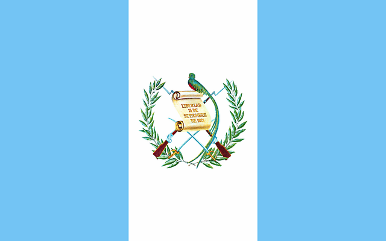

La RESILIENCIA es el proceso de adaptación a las adversidades, traumas, tragedias, amenazas o fuentes de tension
significativas, como problemas familiares o de relaciones personales; problemas serios de salud, de trabajo
o financieros. La resiliencia o entereza es la capacidad para adaptarse a las situaciones adversas con resultados positivos. Sin embargo,
el concepto ha experimentado cambios importantes desde la década de los sesenta. En un principio se interpretó como una condición innata
luego se enfocó en los factores no solo individuales, sino también familiares y comunitarios y actualmente en los culturales.
Los investigadores del siglo XXI entienden la resiliencia como un proceso de cambio comunitario y cultural, que responde a tres modelos
que la explican: un modelo «compensatorio», otro de «protección» y por último uno de «desafío». Asimismo, la resiliencia es la capacidad
de tener éxito de modo aceptable para la sociedad a pesar de un estrés o de una adversidad que implica normalmente un grave riesgo de
resultados negativos. También se define como un proceso de competitividad donde la persona debe adaptarse positivamente a las situaciones
adversas.
Resiliencia Familiar
La resiliencia en el factor familiar es un tema interesante porqué se está viviendo en la actualidad, lastimosamente en tiempos de pandemia
hay muchas situaciones sobre las cualesno podemos estar separados, sin embargo, es necesario aprender a sobre llevar las circunstancias
que se nos atraviesen. La pandemia ocasionó que muchas de las personas por el encierro cortaran sus rutinas y en muuchos casos se volvieron personas
sedentarias e incluso vulnerables.
Al hablar de resiliencia familiar, nuestra concepción se centra en las capacidades y fortalezas de la familia, algo que está íntimamente
relacionada con el modelo salutogénico de Antonovsky.
Es por esto por lo que conceptualmente la resiliencia familiar conlleva una perspectiva salutogénico y positivo en cuanto que permite explicar
por qué algunas familias muestran una buena adaptación a pesar de estar expuestas a una adversidad severa..
La pandemia ocaciono que muchas personas dejaran la resiliencia de lado por el encierro o por circuntancias mayores
como lo pudo haber sido la pérdida de algun ser querido por el COVID-19, por la perdida de trabajo que ocasiono esta,
entre otras cosas.
1,085,327 Casos acumulados registrados
Numero de personas que han sufrido COVID-19 hasta el 21 de agosto 2,022 en Guatemala

Tasa de Desempleo en Guatemala alcanzo el 4.65%
Tasa de Desempleo a nivel nacional durante el primer año de pandemia
38% de Las Familias sufrieron Ausencia de Resiliencia
Las familias Guatemaltecas sufrieron la ausencia de resilicia por la pandemia
Causas sobre la Falta de Resiliencia Familiar
La Perdida de algun Ser querido.
Debilidad Natural y aún más afectada por la Pandemia.
El confineamiento.
El haber contraido el COVID-19 o alguno de sus familiares.
Naturalidad de la persona.
Personalidad activa.
Carencia de objetivos en la vida.
La falta de inserción social.
Consecuencias sobre la Falta de Resiliencia Familiar
Presentación de Traumas Severos.
Aumento de la vulnerabilidad y el miedo.
Fuentes consecutivas de Tensión Significativas.
Carencia de ánimo.
Carencia de Comunicacion con los familiares, amigos, etc.
Soluciones sobre la Falta de Resiliencia Familiar
Buen Funcionamiento Familiar.
Tener Buena Comunicacion Efectiva y Eficaz en el Hogar.
Tiempo Familiar Compartido.
Desahogo emocional o compartir ideas.
Carencia de Negatividez.
Proactividad y tener iniciativa.
Mostrar apoyo hacia los demás.
"Recuerda que Siempre eres más grande que tus circunstancias, eres mas que
cualquier cosa que te pueda ocurrir".
(c) 2022 copyrigth: Alejandro Alvarez